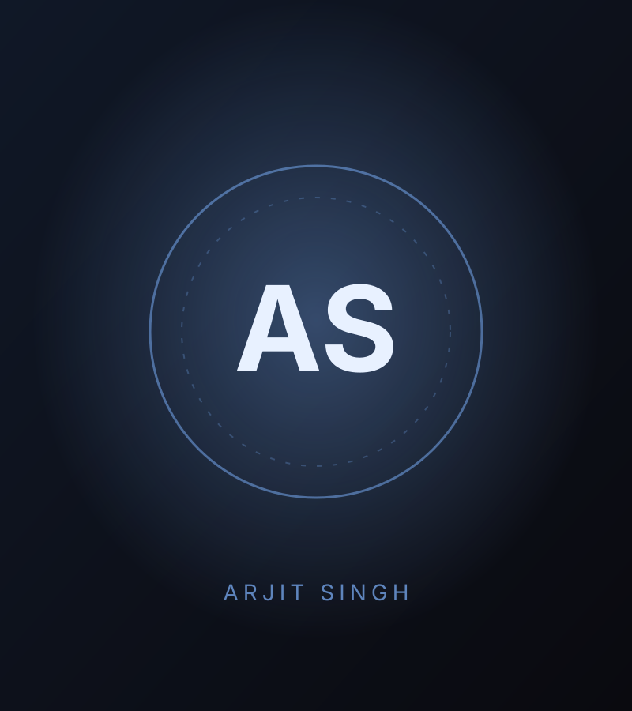
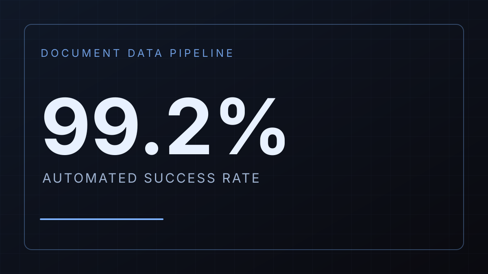
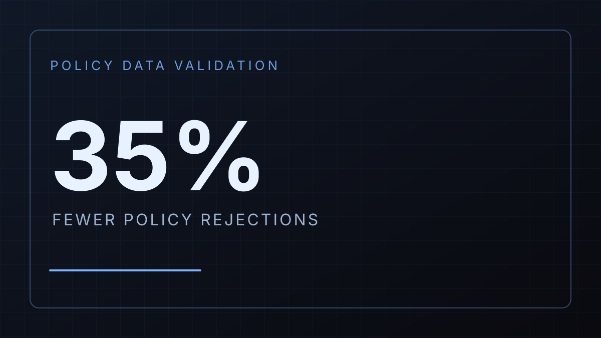
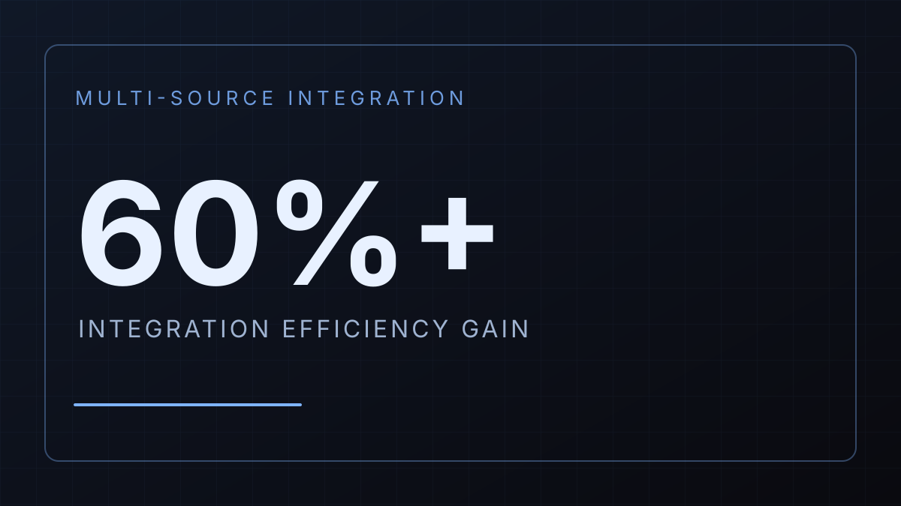

Hi, I'm Arjit Singh
Technical Analyst
0
Years Experience
0
Key Workstreams
0
Tools & Skills
About Me

Hi, I'm Arjit Singh.
I'm an analytics-focused professional who turns business requirements into reliable data systems, validation engines and reporting solutions.
SQL & Data Analysis
Dashboards & KPIs
Requirements & UAT
Rapid Prototyping
With 3 years of experience across technical analysis, microservices, data validation and cross-functional delivery, I work between product, engineering, customers and project teams. I'm skilled in SQL-driven analysis, backlog prioritization, stakeholder coordination and AI-assisted prototyping.
Let's turn complex requirements into solutions that ship.
Featured Work
Selected workstreams from my time at Star Health — data pipelines, validation, integration and reporting, built with business and engineering teams.

Document Data Pipeline Automation
- Identified a manual document-upload bottleneck that caused daily data discrepancies.
- Defined SLA targets, data validation rules and fault-tolerance requirements for the pipeline.
- Ran User Acceptance Testing and validation cycles before rollout to ensure production readiness.
- Results: 99.2% automated success rate and 80% reduction in manual processing.

Policy Data Analysis & Validation
- Acted as primary point of contact between underwriting and engineering, translating business rules into a structured validation engine.
- Managed requirements and prioritization for the workstream using JIRA.
- Used SQL on MySQL, with AI-assisted query development and documentation, to find data anomalies, escalate risks and flag trends.
- Results: reduced policy rejections by 35%.

Multi-source Data Integration
- Scoped an API orchestration layer for retail and group insurance flows.
- Analysed transaction failure patterns across data sources and identified root causes.
- Results: implemented fixes that improved integration efficiency by 60%+.

Reporting & Dashboard Analytics
- Defined persona-based KPI requirements with operations and sales stakeholders, aligned to data governance and quality standards.
- Built dashboards using MongoDB aggregation and SQL, with Excel-based summaries shared with business teams.
- Results: replaced bespoke manual reporting with standardised, real-time visibility.
Impact Highlights
99.2%
Automated Pipeline Success Rate
80%
Reduction in Manual Processing
35%
Fewer Policy Rejections
60%+
Integration Efficiency Gain
Skills & Proficiencies
Data & Analytics
- SQL (MySQL)
- MongoDB Aggregation
- Data Analysis
- KPI Definition
- Reporting & Dashboards
- Microsoft Excel
- Grafana
Testing & Delivery
- UAT & Regression Testing
- Requirement Backlog Prioritization
- Data Governance Alignment
- Agile/Scrum
- JIRA
AI-Augmented Workflow
- AI-assisted SQL Development
- AI-assisted Data Analysis
- Technical Documentation
- Cursor
- Lovable (Prototyping)
Stakeholder & Communication
- Requirement Gathering
- Stakeholder Management
- Cross-functional Collaboration
- Business Reporting
- Data Storytelling
Technical
- Java
- Spring Boot
- Apache Kafka
- Redis
- MySQL
- MongoDB
- REST APIs
- Docker (basic)
- Git
- Postman
- Linux
Work Experience
Career snapshot 2023–2026 From insurance data systems to cross-functional solutioning, turning business needs into dependable technical delivery.
Technical Analyst
NexusolveCore tools & expertise
- Requirements Analysis
- Technical Solutioning
- Cursor
- Lovable
- Rapid Prototyping
- Project Tracking
- Stakeholder Management
Contributions & outcomes
5 contributionsTranslated business requirements into technical solutions
Understood workflows, constraints and platform capabilities to shape solutions that were technically feasible.
Bridged engineering, product and customers
Kept requirements, dependencies and execution aligned across cross-functional teams and other stakeholders.
Built prototypes and proofs-of-concept
Used AI-assisted tools such as Cursor and Lovable to validate ideas quickly and accelerate solution development.
Tracked delivery against project objectives
Monitored requirements, dependencies, timelines and deliverables so execution matched stakeholder expectations.
Supported sales and solution upselling
Identified additional solution capabilities for different workflows, with a focus on scalability and broader platform adoption.
Assistant Manager
Star Health and Allied Insurance Co. Ltd.Core tools & expertise
- SQL (MySQL)
- MongoDB Aggregation
- JIRA
- UAT
- Data Validation
- API Orchestration
- KPI Dashboards
- Excel
- AI-assisted SQL
Contributions & outcomes
4 contributionsAutomated the document data pipeline
Found a manual document-upload bottleneck causing daily discrepancies; defined SLA targets, validation rules and fault-tolerance requirements and ran UAT before rollout. Result: 99.2% automated success rate and 80% less manual processing.
Built a policy data validation engine
As the main contact between underwriting and engineering, turned business rules into a structured validation engine, managed priorities in JIRA and used SQL on MySQL to surface anomalies and trends. Result: policy rejections down 35%.
Improved multi-source data integration
Scoped an API orchestration layer for retail and group insurance flows, analysed transaction failure patterns and fixed root causes. Result: 60%+ better integration efficiency.
Standardised reporting and dashboards
Defined persona-based KPI requirements with operations and sales, aligned to data governance standards, and built dashboards with MongoDB aggregation and SQL plus Excel summaries. Result: real-time visibility replacing manual reporting.
IRIS
Intelligent Responsive Interface System
Llama 3.1